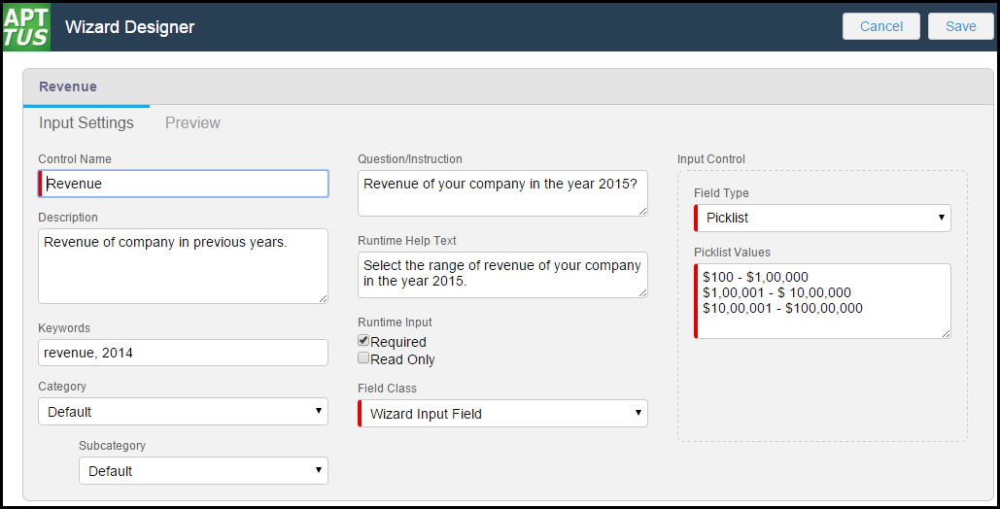
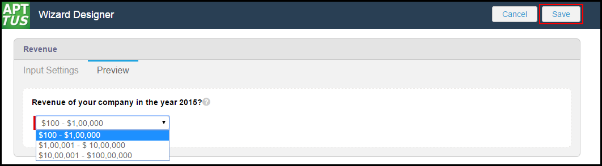

Input controls are the primary components of any wizard. They are the questions and instructions that you provide to the end users of your wizard. For example, you might create an input control that requires users to select picklist options, such as Business Function or Agreement Start and End dates. Input controls are reusable, so you can use them in as many steps as you want to.
For each input control, you need to configure the context (the associated object and control type), the input properties (the question or instructional text) and the response properties (the response object and its fields). You can also clone an existing input control and change its properties to use it as a new input control.
To create an input control
Click the Wizard Component Library tab.
Click New Input Control.
On the Input Settings tab, enter a descriptive Control Name.
Complete the following fields.
Field Name
Description
Control Name
Enter a mandatory descriptive Control Name.
Description
Enter a Description that describes the input control.
Keywords
Enter the Keywords that would help find this input control.
Category
Enter the Category of this input control. The default value is Default. Defining a Category helps you organize your questions when creating input control.
SubCategory
Enter the SubCategory of this input control. The default value is Default. Defining a SubCategory helps you organize your questions when creating input control.
Question/Instruction
Enter the Question or Instruction to be which a supplier will see in the runtime wizard and will select an appropriate response.
Runtime Help Text
Enter the Runtime Help Text which appears when the user hovers over the
icon.
Runtime Input
Select the Runtime Input of this input control. The available options are.
Allow Comments and Attachments - Select this check box to enable the end user to add comments and/or attachments in addition to the input control value. Comments are entered into a text area field and are limited to 500 characters. There is no limit to the number of files a user can attach.
Note:
How Comments and Attachments are used in the Wizard
For any type of Wizard, all runtime comments and attachments are saved in the Wizard Runtime Input instance record under Notes & Attachments. You can make use of these comments and attachments through your own implementations.
If you design a Wizard to create a record, comments and attachments are copied to the Notes & Attachments list only if the corresponding input uses an Object for the same object created by the record (e.g., Input defined as 'Field Class = Object Field,' 'Object = Agreement' when the Wizard creates as Agreement record). Notes containing comments are named after the Object Field for which they were entered (e.g., "Account Notes," or "Agreement Risk Rating Notes")
Required – Select this check box if you want to set your question as mandatory for the suppliers to respond to.
Read Only – Select this check box if you want to set your question as read only.
Field Class
Select the Field Class of this input control. This field is mandatory. The available options are.
Wizard Input Field – Select this option if you want to enter the field type in the wizard itself.
Object Field – Select this option if you want to refer to the field type of an existing field.
Input Control - Field Type
Select the Field Type for this input control. This field is mandatory. The available options are.
Checkbox
Date Number
Picklist
Radio Button Picklist
Multi Picklist
Text
Text Area
Input Control - Picklist Values
Enter the values to be displayed to the supplier, separated in each line. This field is mandatory.

Click the Preview tab to view the preview of the question.
Click Save.

You have successfully created an input control. This input control will be visible to an end user while the wizard is executed. The saved input control is now part of the Input Control Library.
You may further create a step for the configurable wizard.